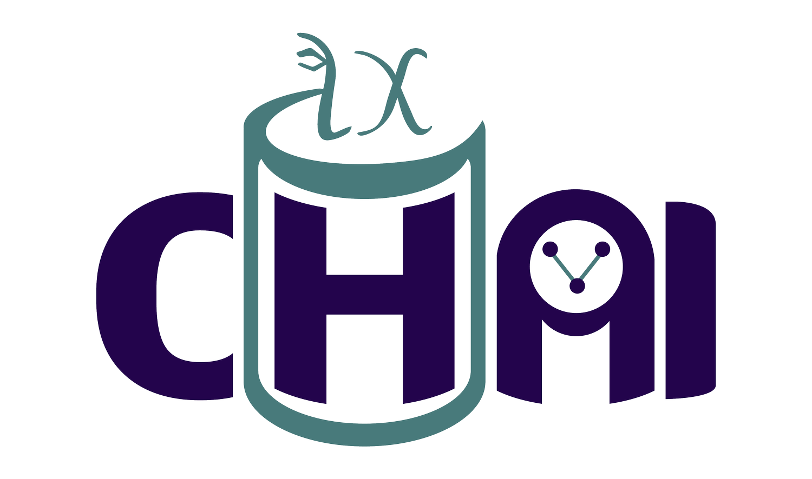

Domain Generalization Copilot
A guided tool for designing predictive models robust to data shifts — based on Butler et al. (2026)

Save Graph
File name
Cancel
OK
Are you sure?
This will replace the current graph. Any unsaved changes will be lost.
Cancel
OK
← Back
View preliminary recommendations
Next →